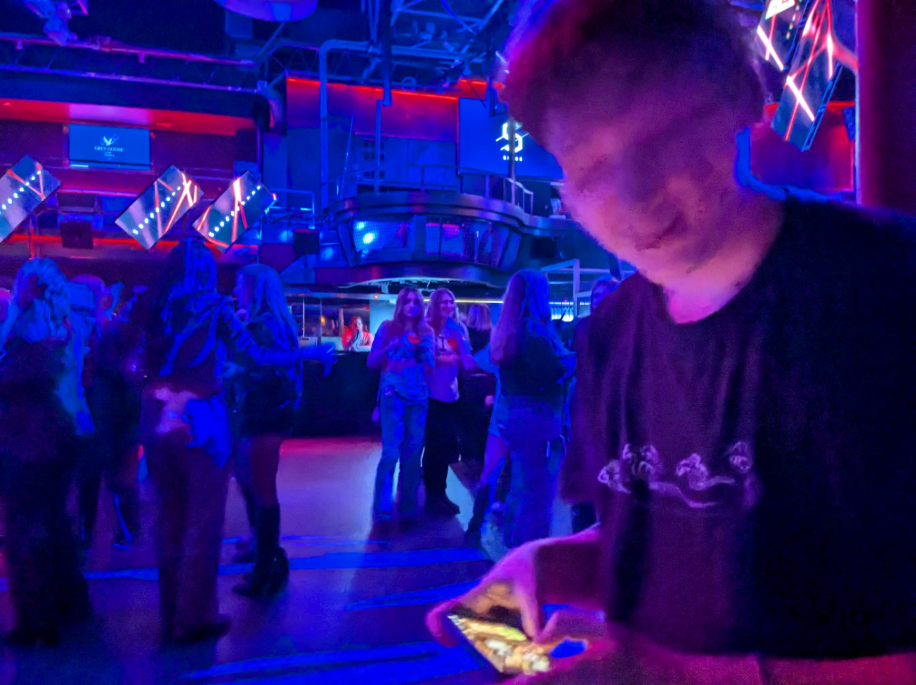

Gaming
Frank loves to game in their free time. Their preferred method is PC but they also enjoy mobile and console gaming. The first video game they truly loved was World of Warcraft, which they started playing at 8 during the Mists of Pandaria expansion. Their current obsession (of three years) is a japanese gacha game called Cookie Run: Kingdom. They spend way too much thinking about it. Below are pictures of Frank playing Cookie Run in front of Michaelangelo's David and at a nightclub
